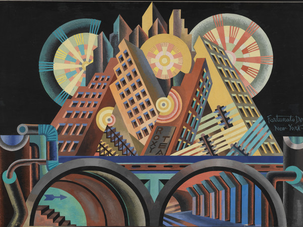

COLLEGAMENTI
ITALIANO
Italo Calvino
Italo Calvino riflette sul rapporto tra uomo e tecnologia. Le Cosmicomiche immaginano universi scientifici e futuristici.

STORIA
Olivetti
Olivetti crea la Programma 101, uno dei primi computer della storia.

GEOGRAFIA
Silicon Valley
Centro mondiale dell’innovazione tecnologica in California.

ENGLISH
Apple
Apple was founded by Steve Jobs and changed technology forever.

ARTE
Futurismo
Il Futurismo celebra velocità, energia e progresso tecnologico.
